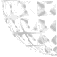
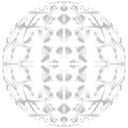

FX
Each kfx file can define multiple particles to spawn when the kfx is spawned.
The number of particle types is specified at the beginning of the file with fx[N] =, followed by a block containing N sub blocks, each defining a particle type to spawn when the kfx is spawned.
The number of particle type definitions must match the value of N, or the game will crash when the kfx is spawned.
Key
Flags
These can be either 0 (false) or 1 (true).
Display
| bDepthBuffer | leave at 0 to be visible through walls (e.g., parts of fusion cannon explosion) |
| bDrawOnBottom | render in front of other particles |
| bLensFlares | must be set for lensFlares property to take effect |
| bOffsetFromFloor | center on the bottom of the sprite, so it doesn't clip into the ground |
| bScaleLerp |
continuously increment rather than multiply
|
| bStopAnimOnImpact | freeze sprite animation after hitting specifically the ground |
| bTextureWrapMirrorWidth |
Mirrors the sprite (horizontally and vertically, contrary to the name and existence of example: 0:  1:  |
| bTextureWrapMirrorHeight | [no effect] |
| bWeaponView |
render with first-person weapon modelview matrix allows consistent alignment with first-person weapon irrespective of FOV, but causes inconsistent positioning in the world when FOV is not 47.5 |
| bMuzzleEffect |
offset (using results in a tighter link than also causes the effect to last for only a single frame |
| bFullScreen | render in the center of the screen |
| bFadeout | [unused] |
Physics
| bAddOffset |
increment location by offset every frame?(required by arrow for its programatic velocity to actually take effect) |
| bBullet |
affects various behavioral properties:
|
| bDestroyOnWaterSurface | destroy when entering/exiting water |
| bNoDirection | use global rather than local coordinates for things like translation and offset |
| bNoHitSource | don't register collision with whatever spawned the particle |
| bPerPolyCollision |
makes the particle qualify for precise projectile collision may not always be desirable, as it can cause the particle to collide with small details like vines |
| bProjectile | orient toward player when spawned? |
| bRetainVelocity | [unused] |
Other/Unknown
| bBlood |
do not spawn when blood is disabled, or against actors with "no blood" flag (namely animals) a details of the green blood violence setting are untested |
| bNoSpawnNear | |
| bNoSpawnFar | |
| bNoWallSpawn | |
| bNoGroundSpawn | |
| bAttachSource | |
| bStickOnTarget | |
| bActorInstance | |
| bCrossFade | |
| bDecalOffset | |
| bImpactEffect | [unused] |
| bRestrictAim | [unused] |
Physics
| offset (v) * | where to spawn this particle, relative to where the kfx itself was spawned |
| muzzleOffset (v) |
similar to for use with |
| translationRandomGlobal | increment translation by a vector with a random direction and random extent up to this amount? |
| translation (v) * |
initial velocity = speed is in terms of distance per second |
| forwardSpeed * | |
| gravity |
acceleration along global vertical axis, in terms of speed per second negative values are down |
| gravityRandomScale | works like other randomization properties, just with a different naming convention |
| mass |
fraction of velocity along hit surface normal to retain when bouncing (after velocity is mirrored): velocity += (1 +
If
|
| friction | fraction of horizontal velocity lost when bouncing specifically off the ground |
| airFriction |
acceleration opposing velocity seems to be constant based on initial velocity:
|
| waterFriction |
Only affects horizontal velocity. Vertical velocity always seems to be affected by Unlike |
Existential
| instances * |
how many copies of this particle to spawn any randomized properties get randomized independently for each instance (e.g., shotgun pellets don't all get the same randomized trajectory) a negative |
| restart | delay by a random percentage of this between spawning instances |
| lifeTime * |
particle will exist for (1 + 4* negative values are simply treated as |
| priority |
There's a limit to how many particles can exist at once. Particles with a higher Things that affect gameplay (like projectiles) should be set to |
Display
General
| scale * | size of the sprite |
| scaleDest * | continuously modifies scale, based on bScaleLerp |
| shader |
shader to render the sprite with typically e.g., |
| sprite |
sprite to represent the particle with e.g., |
| lensFlares |
lens flare effect to cause e.g.,
|
trailDefinition_1 |
leave polygonal trails e.g., |
| drawType |
|
| visibilityType |
|
| animType |
|
| animSpeed | how long to display each frame of sprite animation, in 1⁄900 seconds (a value of 60 will display each frame for 1 lifeTime unit) |
| animFriction |
how much to slow animation as velocity decreases? not sure of the details; reasonable values seem to be around negative values do not appear to cause animation to speed up as velocity decreases |
Rotation
| rotationOffset * | radians, clockwise |
| rotationSpeed * | radians per 1⁄15 seconds, clockwise |
| rotationPivotX |
offset from the particles's physical location to render the sprite uses the same coordinate system as other vectors, except relative to the camera's orientation, rather than the particles's orientation sprite rotation orbits the particles's physical location (this is how rockets and shockwave weapon projectiles spiral) spawned particless will center on the sprite, but hit detection, splash damage, and sounds will still be based on the particles's physical location |
| rotationPivotY |
Color
| whiteColor (c) | displayColor = blackColor + spriteColor * (whiteColor - blackColor) |
| blackColor (c) | |
| hueRandom |
color randomization values range from |
| saturationRandom | |
| brightnessRandom | |
| fadeInTime | fade in during first fadeInTime 1⁄15 seconds of lifeTime |
| fadeOutTime | fade out during last fadeOutTime 1⁄15 seconds of lifeTime |
Collision
| onCollideActor |
|
| onCollideWall | |
| onCollideFloor |
Events
| onImpact |
happens when hitting an actor, wall, or floor (based on the contains a sub-block for each surface type it can hit:
|
| onTick | happens continuously, unless underwater |
| onExpire |
happens when |
| onWaterImpact | happens when entering (or exiting?) water |
| onWaterTick | happens continuously instead of onTick while underwater |
| onWaterExpire | happens instead of onExpire when lifeTime runs out, if underwater |
Each of these blocks can contain any combination of the following:
| fx |
spawn another effect e.g., |
| sound |
play a sound e.g., |
| damageClass |
deal damage, from defs/damageInfo.txt e.g., ignored by |